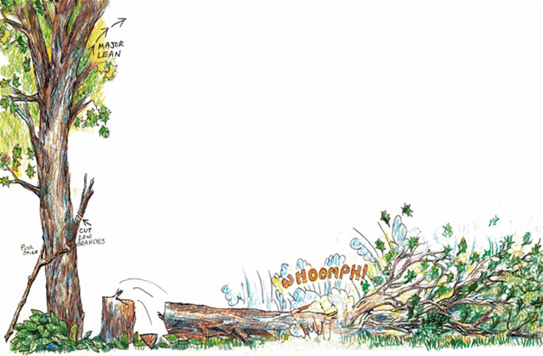
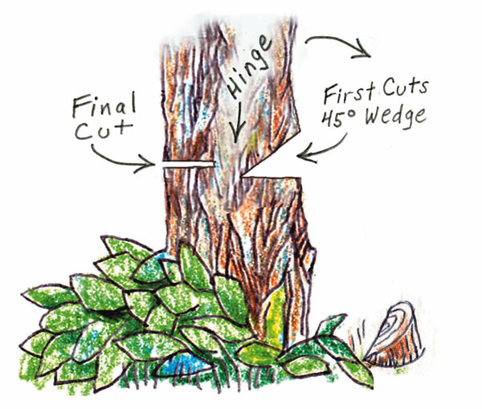

Cutting down trees can be dangerous work, especially in yards with buildings and power lines nearby. Even if you are cutting firewood out in the forest, you should prepare carefully before you begin sawing. Trees don’t always fall exactly where you intend, and if they bounce off neighboring branches, you could be injured if you are standing too close. Wherever you are cutting down a tree, having someone along to help or just watch is a smart thing to do.
To do the job well, you’ll need to establish a comfortable work area. First, clear out a place around the tree where you can get a firm footing and have enough space to work with a chain saw. Lop off any lower branches in your way. Before making any cuts, walk around the tree and study it. Are you sure this is a tree you want to eliminate-is it a nut or fruit tree; does it have nests in it; is it a rare species.
Judging the Fall
Once you have decided which tree to cut, think about where the tree will naturally fall. Which way is it leaning? Stand back and hold an axe in front of you by the tip of the handle. The handle will be plumb (straight up and down) because of the bottom weight, and by sighting along the handle, you can determine the lean of the tree. This is the most important indication of which direction the tree will go.
Next, look at the balance: If there are too many heavy branches on one side, it may pull the tree over to that side. Pay close attention to the top of the tree; if it is nodding in one direction when the wind blows, this will influence the way the tree will fall.
Check the trunk at about waist height-where you will be cutting-for rot. Look for holes in the trunk of the tree. Several large, dead branches on the tree may signify interior decay. Any rot can influence the direction the tree will fall. If you have reason to believe there is considerable rot in the trunk of the tree, get the advice of an experienced tree cutter before proceeding.
These four factors-lean, balance, wind and rot-will give you a good idea of where the tree will land. With that in mind, look for a clear space, or bed, into which to drop the tree, where it won’t damage anything valuable or get hung up in the branches of another tree. Never try to drop a tree up a steep slope-it could kick back at you when it hits the ground.
You now know where you want to drop the tree and where the tree wants to fall. But do you both agree? If you and the tree are within 45 degrees of each other, you can proceed without any special cuts. If you are unsure of where the tree will fall, you can direct it by tying a rope or cable as high on the tree as you can reach. Either make certain the rope is long enough that whoever is pulling does not end up under the tree, or put the rope around a tree out in front of the spot you want your tree to fall, so that your helper can pull from the side at a 90-degree angle. Also, create two escape routes so you can move away quickly as soon as the tree begins to fall. Fix the routes firmly in your mind.
Dropping a Tree
When you first try felling a tree, be prepared for the possibility that you will drop a tree in the wrong direction. Learn from your mistakes and eventually you’ll master the craft.
For small trees up to about 6 inches in diameter, you do not need any fancy cuts. When you have cut about three-quarters of the way through the tree, you can usually stand to one side and push the tree over into its bed. Pushing with a forked stick is particularly effective.
The traditional way of felling bigger trees is with an undercut and a back cut. It is possible to use an axe, but also dangerous. Chopping tends to dislodge weak branches, which can fall on your head, and the lack of precision with an axe cut makes it harder to predict where the tree will fall. Using a saw-such as a chain saw or tubular-frame bow saw-will make it easier to predict where the tree will fall, but you must exercise caution with these tools, too.
The undercut is the first cut you will make. It should be made on the side where you want the tree to fall. Begin at waist height with a horizontal cut, continuing to about one-third the distance through the tree. Pull out the saw and begin another cut, angling it downward, far enough above the first to cut out a 45-degree wedge of wood.
Make sure the horizontal cut is perpendicular to the direction of the fall. You can check this with a handmade sighting stick or with a straight-handled double-bit axe. Facing the cut, insert the axe head into the wedge, resting it on the flat, first cut. The handle then should point in the direction you want the tree to fall.
Once you are certain that the undercut is correct, you can begin the final cut, also known as the back or felling cut. Go around to the other side of the tree, opposite the undercut side, and saw into the tree about 2 inches above the base of the undercut. Keep the cut horizontal; don’t angle it down. Keep sawing, while paying careful attention to the hinge-the piece of uncut wood between the back cut and the undercut. The tree will topple before the saw cuts all the way through, and how it falls will depend largely on the hinge. As you saw, try to keep the hinge uniformly thick. If it is uneven, the tree may tear from the thin end of the hinge while hanging back on the thick end, causing the tree to twist and fall in a different direction than you planned.
In addition to the hinge, keep a close watch on the kerf-the space that the saw leaves behind as you cut through the trunk. This space will give you your only advance warning of how the tree is going to fall. When you get about one-third of the way toward the undercut, you should notice the kerf getting slightly bigger. Good! This means the tree is beginning to lean toward the undercut, which is where you want it to go. Keep sawing-but never cut all the way through the hinge-until you hear the crack as the tree leans enough to break the hinge. Remove the saw and back off quickly.
If you notice that the kerf is closing up instead of getting bigger, you have misjudged the lean or the balance of the tree and the tree will fall nowhere near the direction of the undercut. Don’t just keep sawing in the hope that the tree will change its mind; trees don’t change their minds. If you keep sawing, the kerf will eventually close up, trapping your saw. Before this happens, remove the saw and have your helper put tension on the rope attached to the tree to pull it over in the right direction. Or put some wedges into the final cut to open the space; saw a bit more and then knock in the wedges a bit further until, as the tree is weakened, its top is shifted in the right direction. If you opt for this method and you are using a chain saw, be sure to use wooden or plastic wedges and not metal ones that could damage the chain’s teeth.
It is possible that the hinge will get thinner and thinner, but the tree will give no indication of which way it is heading because it is balanced on the hinge. It may fall one way or the other; or with no hinge to guide it, the tree may slide off the stump and kick out at you. When you notice this happening, stop sawing and use ropes, a pushing stick or wedges to get the tree down.
If the tree does not fall completely, but instead gets caught in the branches of another tree, there is only one safe way to dislodge it-wrap a cable around the butt end and use a winch, come-along or truck to pull it free. Or just leave it in place, and do not try to cut it down. Eventually the weight of the tree or wind may dislodge it; until then, avoid walking under the tree.
Always take your time and think through each step. You can minimize injury by paying careful attention and stopping if you are tired or confused. With practice and patience, you can learn to fell a tree safely.
Adapted from The Earth Manual: How to Work on Wild Land Without Taming It by Malcolm Margolin, 1975. Used by permission of Heyday Books, Berkeley, Calif.
|
 To fell a tree, make three cuts: a horizontal and angled cut to create a wedge-shaped opening; and a final felling cut that allows the tree to fall on its hinge. |
 |
|